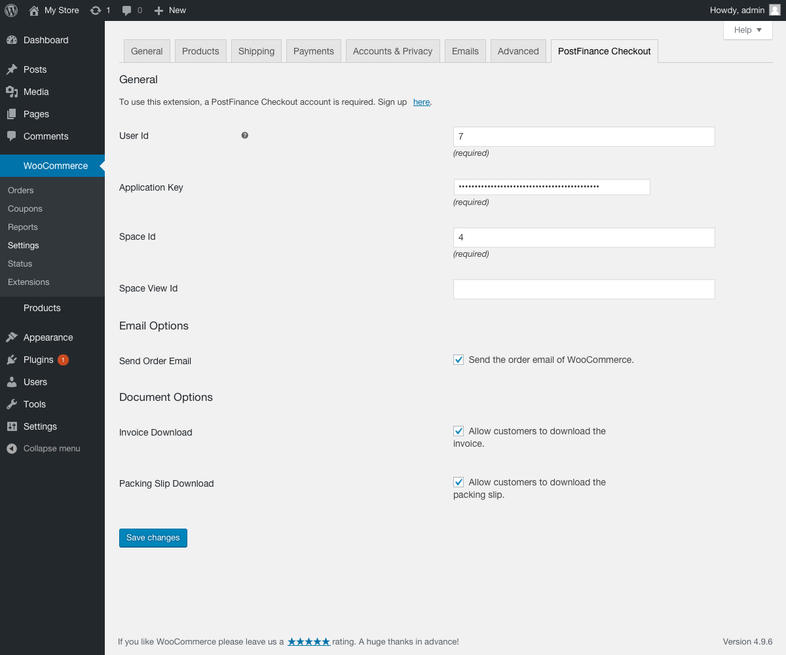

PostFinance Checkout WooCommerce
Documentation
1Prerequisites
If you don’t already have one, create a PostFinance Checkout account.
2Installation
-
Install the extension directly from your Wordpress backend by going to Plugins → Add New. There search for PostFinance Checkout.
-
The plugin will now be visible under Plugins. You can install the plugin directly from here. Once it is installed, you will be able to open the configuration.
|
Note
|
You will be automatically notified once there are updates available for the plugin within WooCommerce. |
3Configuration
-
Navigate to WooCommerce → Settings → PostFinance Checkout in your Wordpress backend and enter the PostFinance Checkout Space ID, User ID and Authentification Key that you can manually create an application user.
 -
Optionally disable downloading invoice and packing slip. These settings allow customers to download the documents from their order overview in the WooCommerce frontend.
-
After saving the configuration, the payment methods are created in the WooCommerce store and the necessary webhooks are set up.
The main configuration is now finished. You should see the payment methods in your checkout. To view the payment method configuration in the Wordpress backend go to WooCommerce > Settings > Payment.
4Payment method configuration
4.1Setup
The PostFinance Checkout payment method configurations are synchronized automatically into the WooCommerce store. There are just a few payment method settings in the WooCommerce store in WooCommerce > Settings > Payment.
4.2Customization
If you want to change the payment method description, title, logo, etc you need to do this in the payment method configuration. Changes will be synchronized automatically.
If you want to map the payment status to specific order statuses you can do that in the plugin settings, under the heading "Order Statuses Settings"
5WooCommerce Order Status
The Payment Process of PostFinance Checkout is completely standardized for every payment method. This gives you the ability to simply add a payment method or processor without changes inside of your WooCommerce configuration. An overview about the states and the payment processes of PostFinance Checkout can be found in the Payment Documentation.
Below you find a diagram that shows the state machine of the WooCommerce order including additional information for the state transitions.

-
When the user is redirected to PostFinance Checkout to process the payment the order within WooCommerce is marked as
Redirected. Along this the transaction within PostFinance Checkout is created resp. updated with the latest address, line items etc. -
When the transaction is marked as
authorizedin PostFinance Checkout the order within WooCommerce will be marked asOn hold. The amount is only reserved at this point. The order is not yet ready to be fulfilled. -
When the transaction fails during the authorization process the WooCommerce order is marked as
Failed. -
In case the delivery indication is
pending, the order within WooCommerce will move into eitherWaitingorManual Decision.Waitingmeans that the transaction is completed but the delivery indication is not yet decided. E.g. the money still needs to be cleared by the customer bank. The status will automatically update later on.Manual Decisionmeans that in this case you have to review and decide the outcome of the delivery indication manually. See more details in On hold orders. -
In case the decision about the fulfillment is negative, the order within WooCommerce will be marked as
canceledwhich means you should not be fulfilled the order. -
If you decide to void an authorized transaction (in case for example the products ordered are no longer in stock), the order within WooCommerce will also be marked as
canceled. -
When the transaction is marked in PostFinance Checkout as
fulfillthe order within WooCommerce will be be marked asProcessing(for physical goods) orCompleted(for virtual/downloadable products). This is when you can start the fulfillment process. Once this state has been reached the plugin does not change the status of the order anymore.
For information about deferred completion, see Complete (capture) an order.
6Transaction management
You can capture, cancel and refund transactions directly from within the Wordpress backend. Please note if you refund, void or capture transaction inside PostFinance Checkout the events will not be synchronized into WooCommerce.
6.1Complete (capture) an order
You have the possibility for your transactions to have the payment only authorized after the order is placed. Inside the connector configuration you have the option, if the payment method supports it, to define whether the payment should be completed immediately or deferred.
In order to capture a transaction, open the order and click on the Completion button.
|
Note
|
When the completion is pending in PostFinance Checkout the order will stay in on hold state. |

Deferred payment completion
Retailers often have the case that they want to authorize transactions only and start the fulfillment process once all items are shippable. This is also possible with PostFinance Checkout.
However, certain processes should be followed. If you have configured payment completion to be deferred you should capture the transaction before you initiate the shipment
as it can always happen that a completion fails. If you want to be sure that you do not ship items for which you have not been paid you should postpone the shipment until
the fulfill state is reached. Initially the transaction will be in the Authorized state in PostFinance Checkout and On hold in WooCommerce. If you want to start the fulfillment process make sure you initiate the completion process as described above. Once the completion was successful the order will switch into the Fulfill state in PostFinance Checkout and into Processing state in WooCommerce.
You can now start the fulfillment process and switch the order into the Processing state in WooCommerce.
For a streamlined deferred completion process in your shop, we recommend the following steps:
-
Filter all orders and select
On holdorders. -
Capture all
onHoldorders. Once the completion has successfully finished the order will automatically switch into theProcessingorCompletedstate depending on the type of products (digital, physical). -
You can now start to fulfill all orders in the
Processingstate.
6.2Void a transaction
In order to void a transaction, open the order and click on the Void button.
|
Note
|
You can only void transactions that are not yet completed. |

6.3Refund of a transaction
You have the possibility to refund already completed transactions. In order to do so, open the order and click on the Refund button.

Enter the amount you wish to refund. You can make partial or full refunds.

You can carry out as many individual refunds as you wish until you have reached the quantity of the original order. The status of the order then automatically switches to complete.
|
Note
|
It can take some time until you see the refund in WooCommerce. Refunds will only be visible once they have been processed successfully. |
6.4On hold orders
As long as the delivery should not be done the state of the order will be in On Hold. This happens when the transaction in PostFinance Checkout
has not reached the fulfill state.
There are essentially two reasons why this can happen:
-
The transaction is not completed. In this case you have to complete the transaction as written above.
-
As long as we are not able to tell you if you should fulfill the order. The delivery decision is done automatically. If this does not happen within the defined time frame, PostFinance Checkout will generate a manual task which you should observe and follow the instructions. When there is a manual task we will also display it in the Wordpress Backend.
You can find more information about manual tasks in our Manual Task Documentation.
6.5Limitations of the synchronization between PostFinance Checkout and WooCommerce
Please note that captures, voids and refunds done in PostFinance Checkout are not synchronized into WooCommerce. You should therefore always perform captures, voids and refunds inside the WooCommerce backend and not inside PostFinance Checkout.
6.6Tokenization
In case the payment method supports tokenization you can store the payment details of your customer for future purchases.
In order to use this feature make sure that the One-Click-Payment Mode in your payment method configuration is set to allow or force storage.
|
Note
|
Tokenization is not available for guest checkouts. |
6.7WooCommerce subscriptions
In case you want to sell Subscriptions with WooCommerce and PostFinance Checkout this is possible. However, you need to get the PostFinance Checkout Subscription Plugin for Woocommerce that you can also get directly from your Wordpress backend in Plugins → Search → PostFinance Checkout Subscriptions.
This plugin is needed to sell subscription products and process recurring orders. Additionally, the plugin requires WooCommerce Subscription to be installed.
7Error logging
The extension uses the default WooCommerce logging functions which are automatically active in your WooCommerce store. The extension will log various unexpected errors or information which can help identify the cause of the error. You can find the logs in your WooCommerce backend in Woocommerce > Status > Logs.
8FAQ
8.1How can I make the payment methods appear in the checkout?
Make sure that you followed the Configuration section by stating your PostFinance Checkout space ID and application user’s access information in the settings page. By saving the configuration form the synchronization of the payment methods and the set up of the webhooks are initiated. Ensure the payment method are visible in the WooCommerce Settings > Payment section and the methods are active.
If this does not solve the problem, make sure no other plugin is hiding the payment methods.
8.2How can I send the product attributes to PostFinance Checkout?
|
Note
|
It is only possible to send the global product attributes to PostFinance Checkout, the custom product attributes are not supported. |
To send a product attribute to PostFinance Checkout edit the attribute in Products → Attributes, select the option Send attribute to PostFinance Checkout. and save.
8.3How can I update the plugin?
Plugin updates can be done directly in your Wordpress backend under Plugins.
Search for the plugin PostFinance Checkout and click on update now. To perform the update, WordPress will need to access your web server. You will therefore have to enter your FTP credentials to proceed.
8.4How can I translate the plugin?
-
Install the Wordpress Loco Translate plugin.
-
Go to Loco Translate > Plugins.
-
Click on WooCommere PostFinance Checkout.
-
Click on the existing language and adapt the translations.
-
Cick New Langugage and translate the strings.
-
8.5How can I add the value of a Date Of Birth or Gender input field from my checkout form to the PostFinance Checkout addresses?
8.5.1Billing Address Date of Birth
For a custom billing date of birth input field to be used in the address the following conditions must be fulfilled:
-
The form field name has to be 'billing_date_of_birth' or '_billing_date_of_birth' or an action has to be registered for the filter 'wc_postfinancecheckout_billing_date_of_birth_field_name' which returns the field name.
-
The field must be submitted in the 'post_data' parameter in the update_order_review request.
-
The date must be saved on the order meta data with the key 'billing_date_of_birth' or '_billing_date_of_birth' or an action has to be registered for the filter 'wc_postfinancecheckout_billing_date_of_birth_order_meta_name' which returns the meta key.
-
The value must be in one of the following formats 'd.m.Y', 'd-m-Y', 'm/d/Y', 'Y-m-d', 'Y/m/d', or an action has to be registered for the filter 'wc_postfinancecheckout_custom_date_of_birth_format' which returns a custom date format. (For more information on the date format check the following link: PHP DateTime Format)
8.5.2Billing Address Gender
For a custom billing gender input field to be used in the address the following conditions must be fulfilled:
-
The form field name has to be 'billing_gender' or '_billing_gender' or an action has to be registered for the filter 'wc_postfinancecheckout_billing_gender_field_name' which returns the field name.
-
The field must be submitted in the 'post_data' parameter in the update_order_review request.
-
The date must be saved on the order meta data with the key 'billing_gender' or '_billing_gender' or an action has to be registered for the filter 'wc_postfinancecheckout_billing_gender_order_meta_name' which returns the meta key.
-
The value must be either 'm' or 'male' for male and 'f' or 'female' for female.
8.5.3Shipping Address Date of Birth
For a custom shipping date of birth input field to be used in the address the following conditions must be fulfilled:
-
The form field name has to be 'shipping_date_of_birth' or '_shipping_date_of_birth' or an action has to be registered for the filter 'wc_postfinancecheckout_shipping_date_of_birth_field_name' which returns the field name.
-
The field must be submitted in the 'post_data' parameter in the update_order_review request.
-
The date must be saved on the order meta data with the key 'shipping_date_of_birth' or '_shipping_date_of_birth' or an action has to be registered for the filter 'wc_postfinancecheckout_shipping_date_of_birth_order_meta_name' which returns the meta key.
-
The value must be in one of the following formats 'd.m.Y', 'd-m-Y', 'm/d/Y', 'Y-m-d', 'Y/m/d', or an action has to be registered for the filter 'wc_postfinancecheckout_custom_date_of_birth_format' which returns a custom date format. (For more information on the date format check the following link: PHP DateTime Format)
8.5.4Shipping Address Gender
For a custom shipping gender input field to be used in the address the following conditions must be fulfilled:
-
The form field name has to be 'shipping_gender' or '_shipping_gender' or an action has to be registered for the filter 'wc_postfinancecheckout_shipping_gender_field_name' which returns the field name.
-
The field must be submitted in the 'post_data' parameter in the update_order_review request.
-
The date must be saved on the order meta data with the key 'shipping_gender' or '_shipping_gender' or an action has to be registered for the filter 'wc_postfinancecheckout_shipping_gender_order_meta_name' which returns the meta key.
-
The value must be either 'm' or 'male' for male and 'f' or 'female' for female.
9Support
If you need help, feel free to contact our support.